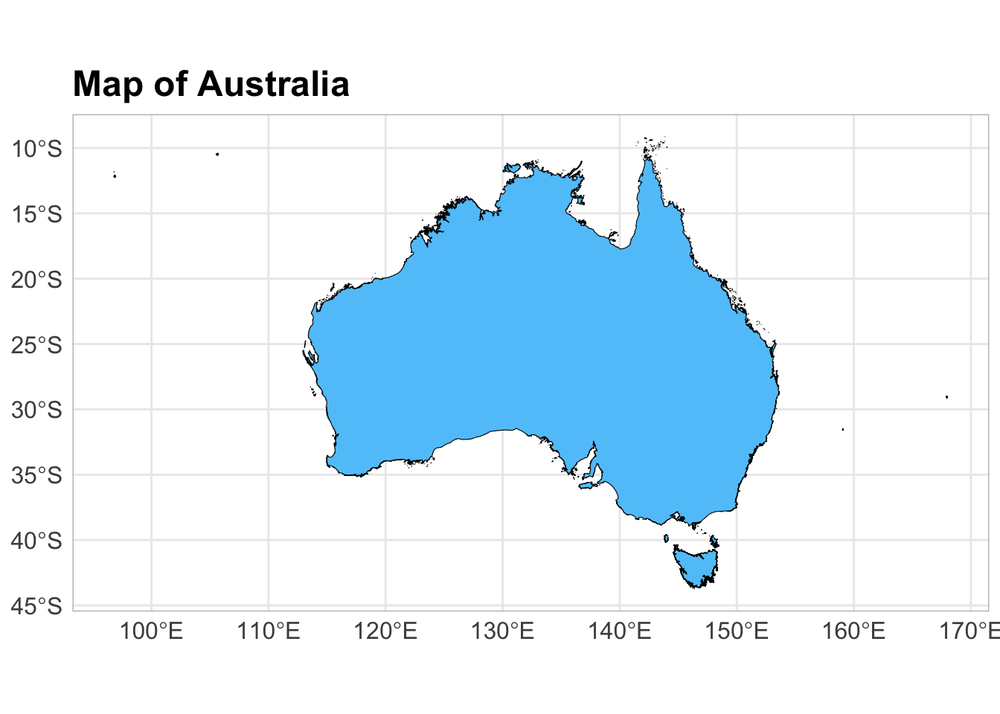
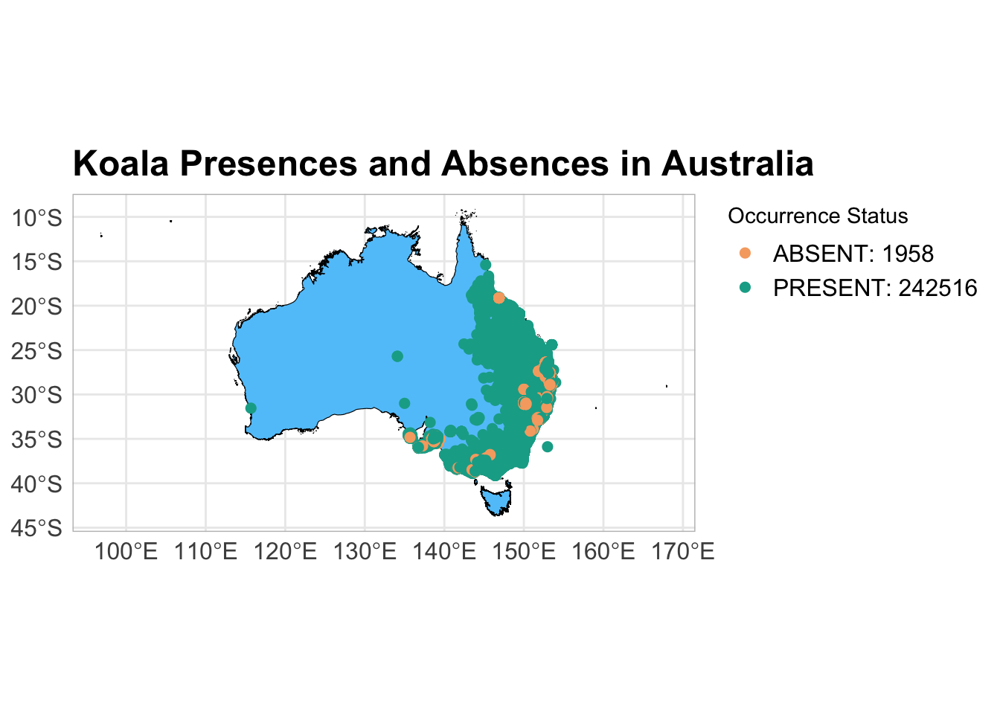
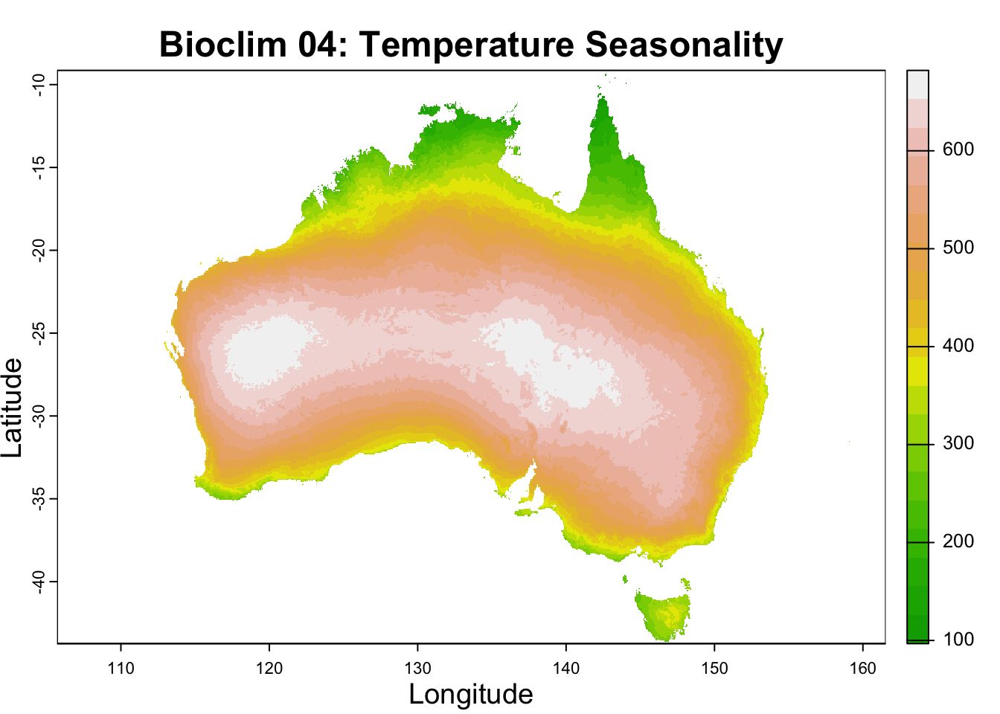
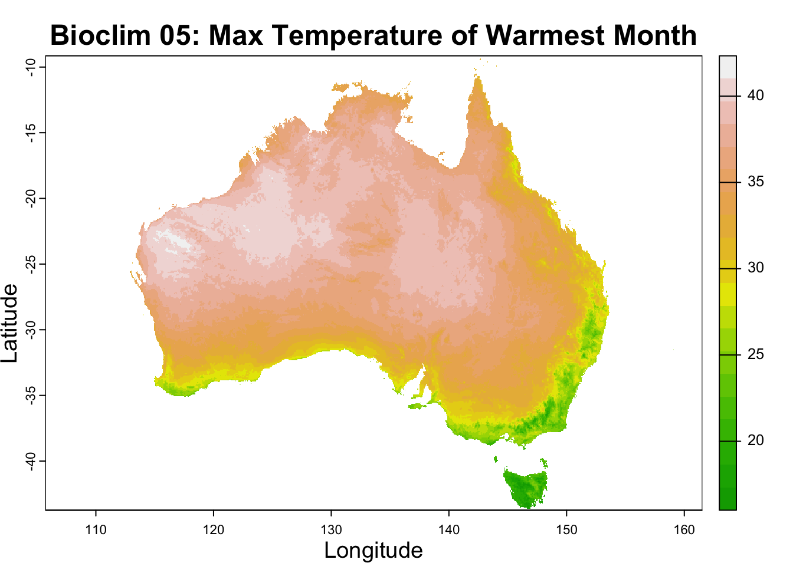
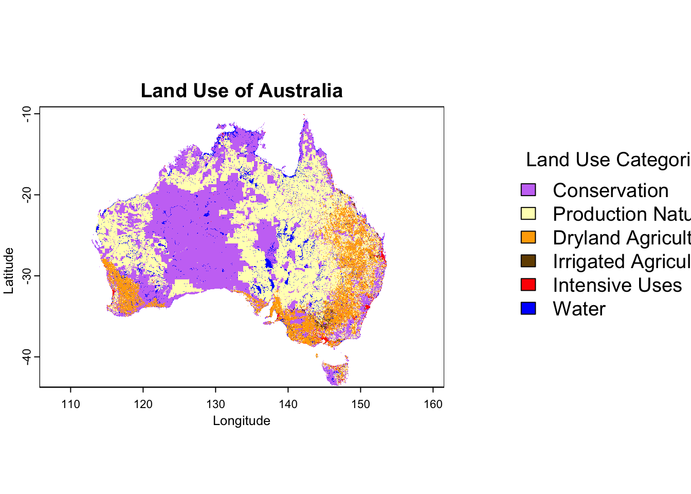
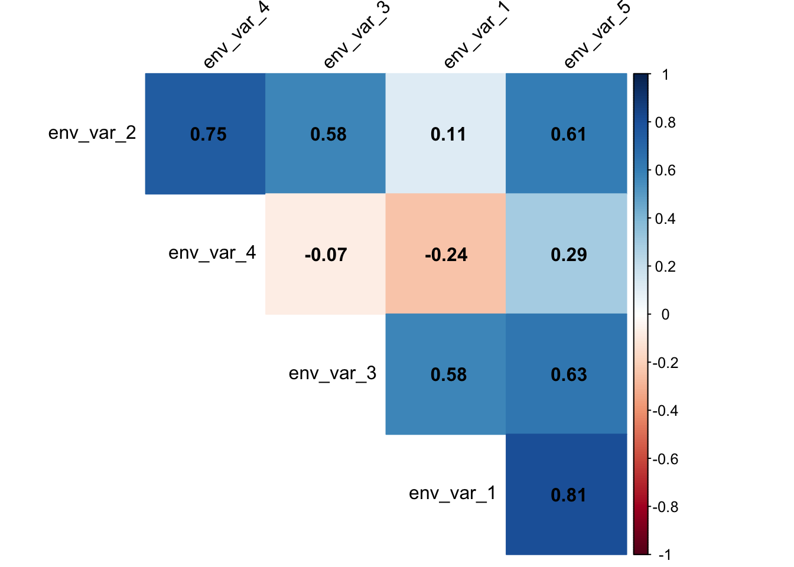
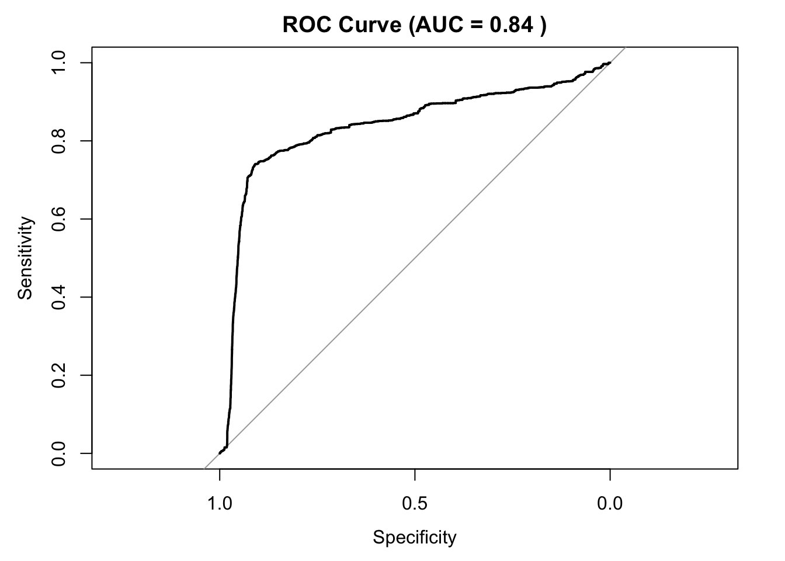

Species Distribution Analysis - Generalized Linear Model (GLM)
Author details: Abhimanyu Raj Singh and Xiang Zhao
Editor details: Dr Sebastian Lopez Marcano
Contact details: support@ecocommons.org.au
Copyright statement: This script is the product of the EcoCommons platform. Please refer to the EcoCommons website for more details: https://www.ecocommons.org.au/
Date: Oct 2024
Script and data info:
This notebook, developed by the EcoCommons team, showcases how to download, and process both continuous and categorical environmental dataset that in the format of raster to be used for SDM.
Workflow Overview:
Initial Setup: Set the working directory and load necessary R packages (dismo, ggplot2, raster, googledrive, sp, dplyr, terra). Create directories to store raw data files.
Data Download: Download continuous environmental dataset from WorldClim. Download categorical environmental dataset from our Google Drive.
Data Processing: Reproject environmental datasets to the crs your desire. Crop and mask environmental dataset to the extent of your study area. Resample environmental dataset to a same resolution.
In the near future, this material may form part of comprehensive support materials available to EcoCommons users.
If you have any corrections or suggestions to improve the effeciency, please contact the EcoCommons team.
Examplary Species: Koala (Phascolarctos cinereus)
Summary
The koala (Phascolarctos cinereus), sometimes called the koala bear, is an arboreal herbivorous marsupial native to Australia. It is the only extant representative of the family Phascolarctidae. Its closest living relatives are the wombats. The koala is found in coastal areas of the island’s eastern and southern regions, inhabiting Queensland, New South Wales, Victoria, and South Australia. It is easily recognisable by its stout, tailless body and large head with round, fluffy ears and large, dark nose. The koala has a body length of 60–85 cm (24–33 in) and weighs 4–15 kg (8.8–33.1 lb). Fur colour ranges from silver grey to chocolate brown. Koalas from the northern populations are typically smaller and lighter in colour than their counterparts further south. These populations possibly are separate subspecies, but this is disputed.
A. Environment, Packages and Dependencies
Some house-keeping before we start. This process might take some time (30mins) as many packages needed to be installed.
1. Set working directory and make a folder to store data.
workspace <-getwd()raw_data_dir <-file.path(workspace, "raw_data")# Create the 'raw_data' directory if it doesn't existif (!dir.exists(raw_data_dir)) {dir.create(raw_data_dir, recursive =TRUE)cat("Directory 'raw_data' created successfully.\n")} else {cat("Directory 'raw_data' already exists.\n")}
Directory 'raw_data' already exists.
# Increase the plot size by changing the options for the plot dimensionsoptions(repr.plot.width =16, repr.plot.height =8) # This will make the plot larger in the notebook output
2. Install and load essential libraries.
# List of packages to check, install if needed, and loadpackages <-c("dplyr", "terra", "sf", "googledrive", "ggplot2", "corrplot", "pROC", "ROSE")# Install missing packages and load themfor (pkg in packages) {if (!requireNamespace(pkg, quietly =TRUE)) {install.packages(pkg) }library(pkg, character.only =TRUE)}
Attaching package: 'dplyr'
The following objects are masked from 'package:stats':
filter, lag
The following objects are masked from 'package:base':
intersect, setdiff, setequal, union
terra 1.7.78
Linking to GEOS 3.11.0, GDAL 3.5.3, PROJ 9.1.0; sf_use_s2() is TRUE
corrplot 0.95 loaded
Type 'citation("pROC")' for a citation.
Attaching package: 'pROC'
The following objects are masked from 'package:stats':
cov, smooth, var
Loaded ROSE 0.0-4
B. Data
1. Get data from EcoCommons Public Google drive
library(googledrive)# De-authenticate Google Drive to access public filesdrive_deauth()# Define Google Drive file IDs and corresponding local file paths for environmental variablesfile_ids <-list(csv ="13wnlQvnAqtml-_MUY6iIZe7LabrrhQCX", # Koala dataenv_var_stack ="1ES0UbTDKSKyQ7PpM8eFN59R8xOYuDgrC"# environmental variables)# Define local file paths for each environmental variablefile_paths <-list(csv =file.path(workspace, "raw_data", "koala.csv"),env_var_stack =file.path(workspace, "raw_data", "env_var_stack.tif"))# Function to download individual files with progress messagesdownload_file <-function(file_id, file_path) {cat("Downloading:", basename(file_path), "...\n")drive_download(as_id(file_id), path = file_path, overwrite =TRUE)cat("Downloaded:", basename(file_path), "\n")}# Download each environmental variable filecat("Downloading environmental variable files...\n")
# Confirm the files have been downloadeddownloaded_files <-list.files(file.path(workspace, "raw_data"), recursive =TRUE)cat("Downloaded files:\n", downloaded_files, "\n")
library(googledrive)# De-authenticate Google Drive to access public filesdrive_deauth()# Folder ID for the Australian polygon shapefileaus_folder_id <-"1rzNHthnQQXVulocKkB5i7v2dObqKMP11"# Define the local directory to save the shapefile componentsshapefile_dir <-file.path(workspace, "raw_data", "aus_shapefile")dir.create(shapefile_dir, showWarnings =FALSE, recursive =TRUE)# List all files in the shapefile folder on Google Drivefiles_in_folder <-drive_ls(as_id(aus_folder_id))# Download each file in the foldercat("Downloading shapefile components...\n")
Downloading shapefile components...
for (i in1:nrow(files_in_folder)) { file_name <- files_in_folder$name[i]cat("Downloading:", file_name, "...\n")drive_download(files_in_folder$id[i], path =file.path(shapefile_dir, file_name), overwrite =TRUE)}
Shapefile components downloaded to: /Users/zhaoxiang/Documents/tmp/test/notebook-blog/models/raw_data/aus_shapefile
2. Define Study Area
All raster files are loaded and reprojected if necessary to ensure consistency.
library(sf)library(terra)library(ggplot2)# Define the path to the Australian shapefile's .shp componentshapefile_path <-file.path(workspace, "raw_data", "aus_shapefile", "AUS_2021_AUST_GDA2020.shp")# Load the Australian boundary as an sf object and convert to EPSG 4326australia_boundary <-st_read(shapefile_path)
Reading layer `AUS_2021_AUST_GDA2020' from data source
`/Users/zhaoxiang/Documents/tmp/test/notebook-blog/models/raw_data/aus_shapefile/AUS_2021_AUST_GDA2020.shp'
using driver `ESRI Shapefile'
replacing null geometries with empty geometries
Simple feature collection with 2 features and 6 fields (with 1 geometry empty)
Geometry type: MULTIPOLYGON
Dimension: XY
Bounding box: xmin: 96.81695 ymin: -43.7405 xmax: 167.998 ymax: -9.142163
Geodetic CRS: GDA2020
australia_boundary <-st_transform(australia_boundary, crs =4326)# Convert the sf object to a SpatVector for terra operations, if neededaustralia_boundary_vect <-vect(australia_boundary)# Plot the Australia boundary using ggplot2ggplot(data = australia_boundary) +geom_sf(fill ="#61c6fa", color ="black") +# Fill with light blue and outline in blacklabs(title ="Map of Australia") +theme_minimal() +theme(plot.title =element_text(size =18, face ="bold"),axis.title.x =element_text(size =12),axis.title.y =element_text(size =12),axis.text.x =element_text(size =12),axis.text.y =element_text(size =12),legend.title =element_text(size =12),legend.text =element_text(size =12),panel.border =element_rect(colour ="gray", fill =NA, linewidth =0.5))

3. Species Occurrence Data Prep and check
# Load required librarieslibrary(sf)library(dplyr)# Read the koala datakoala_path <-file.path(workspace, "raw_data", "koala.csv")koala_data <-read.csv(koala_path)# Filter rows without missing values in coordinateskoala_data_clean <- koala_data %>%filter(!is.na(decimalLongitude), !is.na(decimalLatitude))# Convert the koala data to an sf object using "decimalLongitude" and "decimalLatitude"koala_sf <-st_as_sf(koala_data_clean, coords =c("decimalLongitude", "decimalLatitude"), crs =4326)# Define the bounding boxbbox <-st_bbox(c(xmin =96.81695, ymin =-43.7405, xmax =167.998, ymax =-9.142163), crs =st_crs(koala_sf))# Convert the bbox to an sfc objectbbox_sfc <-st_as_sfc(bbox)# Filter koala points that fall within the bounding boxkoala_sf_au <- koala_sf[st_within(koala_sf, bbox_sfc, sparse =FALSE), ]# View filtered pointsprint(koala_sf_au)
Simple feature collection with 244474 features and 1 field
Geometry type: POINT
Dimension: XY
Bounding box: xmin: 115.6839 ymin: -39.1295 xmax: 154 ymax: -15.4
Geodetic CRS: WGS 84
First 10 features:
occurrenceStatus geometry
1 PRESENT POINT (138.7069 -34.91539)
2 PRESENT POINT (138.8452 -35.19909)
3 PRESENT POINT (138.7268 -34.91561)
4 PRESENT POINT (138.7688 -34.96979)
5 PRESENT POINT (138.6979 -34.96306)
6 PRESENT POINT (138.7317 -34.92928)
7 PRESENT POINT (138.5654 -34.93541)
8 PRESENT POINT (138.6774 -35.02592)
9 PRESENT POINT (138.7089 -34.9585)
10 ABSENT POINT (138.6245 -34.9807)
# Replace "PRESENT" with 1 and "ABSENT" with 0 in the occurrenceStatus columnkoala_sf_au$occurrenceStatus <-ifelse(koala_sf_au$occurrenceStatus =="PRESENT", 1, 0)# Convert occurrenceStatus to a factorkoala_sf_au$occurrenceStatus <-factor(koala_sf_au$occurrenceStatus, levels =c(0, 1))# View updated koala dataprint(koala_sf_au)
Simple feature collection with 244474 features and 1 field
Geometry type: POINT
Dimension: XY
Bounding box: xmin: 115.6839 ymin: -39.1295 xmax: 154 ymax: -15.4
Geodetic CRS: WGS 84
First 10 features:
occurrenceStatus geometry
1 1 POINT (138.7069 -34.91539)
2 1 POINT (138.8452 -35.19909)
3 1 POINT (138.7268 -34.91561)
4 1 POINT (138.7688 -34.96979)
5 1 POINT (138.6979 -34.96306)
6 1 POINT (138.7317 -34.92928)
7 1 POINT (138.5654 -34.93541)
8 1 POINT (138.6774 -35.02592)
9 1 POINT (138.7089 -34.9585)
10 0 POINT (138.6245 -34.9807)
library(ggplot2)library(dplyr)# Calculate counts for presence and absencekoala_counts <- koala_sf_au %>% dplyr::count(occurrenceStatus)# Create labels for the legend that include countslegend_labels <-c("0"=paste0("ABSENT: ", koala_counts$n[koala_counts$occurrenceStatus ==0]),"1"=paste0("PRESENT: ", koala_counts$n[koala_counts$occurrenceStatus ==1]))
# Plottingggplot(data = australia_boundary) +geom_sf(fill ="#61c6fa", color ="black") +# Australia map fill and outline colorgeom_sf(data = koala_sf_au, aes(color = occurrenceStatus), size =2) +# Koala presences and absences pointsscale_color_manual(values =c("0"="#f6aa70", "1"="#11aa96"), # Colors for absence (0) and presence (1)labels = legend_labels) +# Labels for legend including countslabs(title ="Koala Presences and Absences in Australia", color ="Occurrence Status") +# Title and legend titletheme_minimal() +theme(plot.title =element_text(size =18, face ="bold"),axis.text.x =element_text(size =12),axis.text.y =element_text(size =12),legend.text =element_text(size =12),panel.border =element_rect(colour ="gray", fill =NA, linewidth =0.5),legend.position.inside =c(0.8, 0.2), # Adjusted legend position for full maplegend.justification =c(0, 1) )

4. Environmental Variables Prep and check
Since the extents of the enviromental variables 1 to 5 are world wide, we need to crop it to the extent of our study area, that is Australia. And we want to make sure the coordinate system of each of the variable is EPSG:4326.
# Load the raster stackstack_file_path <-file.path(workspace, "raw_data", "env_var_stack.tif")raster_stack <-rast(stack_file_path)# Assign new names to the first five layerslayer_names <-c("env_var_1", # "Bioclim 01: Annual Mean Temperature","env_var_2", # "Bioclim 02: Mean Diurnal Range","env_var_3", # "Bioclim 03: Isothermality","env_var_4", # "Bioclim 04: Temperature Seasonality","env_var_5", # "Bioclim 05: ","env_cat_var_1"# "Six class of land use of Australia",)names(raster_stack)[1:6] <- layer_names# Factorize the sixth raster layerraster_stack[[6]] <-as.factor(raster_stack[[6]])
# Plot the masked rasterplot(raster_stack[[4]],main ="Bioclim 04: Temperature Seasonality",col =terrain.colors(20),xlab ="Longitude",ylab ="Latitude",cex.main =1.5,cex.lab =1.2,cex.axis =1)

# Plot the masked rasterplot(raster_stack[[5]],main ="Bioclim 05: Max Temperature of Warmest Month",col =terrain.colors(20),xlab ="Longitude",ylab ="Latitude",cex.main =1.5,cex.lab =1.2,cex.axis =1)

# Set color palette and categoriescolor_palette <-c("#CA7AF5", "#FFFFBE", "#FFAA00", "#734C00", "#FF0000", "#0000FF")color_category <-c("Conservation","Production Natural","Dryland Agriculture","Irrigated Agriculture","Intensive Uses","Water")# Set up layout with more space for the main plot and a smaller area for the legendlayout(matrix(c(1, 2), nrow =1), widths =c(7, 3)) # Allocate 7:3 space for the main plot and legend# Increase the plot size by changing the options for the plot dimensionsoptions(repr.plot.width =16, repr.plot.height =8) # This will make the plot larger in the notebook output# Increase the margins for the main plot to make it visually balancedpar(mar =c(5, 4, 4, 1), cex.axis =1.5, cex.lab =1.5, cex.main =2) # Adjust margin and text sizes# Plot the reclassified raster without the legend or color barplot(raster_stack[[6]], col = color_palette, main ="Land Use of Australia",legend =FALSE, axes =TRUE, xlab ="Longitude", ylab ="Latitude")# Set margins for the legend plot area and create enough space to avoid overlappar(mar =c(5, 1, 4, 1)) # Minimal margins for the legend areaplot.new() # Create a blank plot for the legend# Add a custom legend with colors and category labels, placed on the leftlegend("left", legend = color_category, fill = color_palette,title ="Land Use Categories", cex =1.2, bty ="n", xpd =TRUE)

5. Combine data for the model
# For the fisrt five continuous environmental variables, we extract their values and combine them with the species presence and absence data# Convert occurrence points to a SpatVector to work with terra packageoccurrence_points <-vect(koala_sf_au)# Initialize an empty list to store the extracted values for the first five raster layersextracted_values_list <-list()# Extract values for the first five environmental layersfor (i in1:5) {# Extract values from the current raster layer extracted_values <-extract(raster_stack[[i]], occurrence_points)[, 2] # Extracts values, removes ID column# Append the extracted values to the list extracted_values_list[[i]] <- extracted_values}
# Combine all extracted values into a dataframeextracted_values_df <-as.data.frame(extracted_values_list)# Set appropriate column names for the extracted environmental variablesnames(extracted_values_df) <-paste0("env_var_", 1:5)# Combine coordinates and occurrence data with the extracted valuescoordinates <-st_coordinates(koala_sf_au)occurrence_data <-as.data.frame(koala_sf_au)# Combine all into a single dataframemodel_data_df <-data.frame(coordinates, occurrence_data, extracted_values_df)# Rename columns for better readabilitynames(model_data_df)[1:2] <-c("Longitude", "Latitude")# View the first few rows of the resulting dataframehead(model_data_df)
# Extract values for the sixth environmental variableenv_var_6_values <-extract(raster_stack[[6]], occurrence_points)[, 2] # Extracts values, removes ID column# Convert the extracted values to a factor (if not already)env_var_6_values <-as.factor(env_var_6_values)
# Add the extracted factor variable to model_data_dfmodel_data_df$env_cat_var_1 <- env_var_6_valuesmodel_data_df <-na.omit(model_data_df) # we need to remove rows containing NA# View the first few rows of the resulting dataframehead(model_data_df)
The number of absence of koala is 1958, the number of presence of koala is 242516, which is very unbalanced. We want to use oversampling method to make some pesudo absence data to add to the koala data to make 0 and 1 balanced.
Number of Additional Absence Records Needed: 242 , 516 − 1 , 958 = 240 , 558 242,516−1,958=240,558
6. Test Collinearity among continuous variables
Testing for collinearity among continuous variables is an important step in many modeling processes, particularly in species distribution modeling and other regression-based analyses. Collinearity occurs when two or more predictor variables in a dataset are highly correlated, which can lead to unstable estimates of regression coefficients and make it difficult to interpret the results.
There are two common methods for testing collinearity among continous variables.
Before fitting the mode, we can use correlation matrix
# Load necessary librarylibrary(corrplot)# Calculate the correlation matrix for the first five continuous variablescor_matrix <-cor(model_data_df[, c("env_var_1", "env_var_2", "env_var_3", "env_var_4", "env_var_5")],use ="complete.obs", method ="pearson")print(cor_matrix)
# Visualize the correlation matrix using corrplotcorrplot(cor_matrix,method ="color", # Use colored squares to represent correlation strengthtype ="upper", # Only show the upper triangle of the matrixorder ="hclust", # Reorder the variables based on hierarchical clusteringaddCoef.col ="black", # Add correlation coefficients in blacktl.col ="black", # Text labels colortl.srt =45, # Rotate text labels for better readabilitydiag =FALSE) # Hide the diagonal

From the above corrplot, we can find:
There are some strong correlations present, notably between env_var_1 and env_var_5 (0.878) and env_var_2 and env_var_3 (0.817). This indicates potential collinearity, which could be problematic for certain modeling approaches, as it can affect the stability of model parameters.
We don’t have to include env_var_2 and env_var_5 in model anymore.
# Remove "env_var_2" and "env_var_5" by specifying their negative indexmodel_data_df <- model_data_df[, !names(model_data_df) %in%c("env_var_2", "env_var_5")]
7. Dealing with unbalanced dataset
Since our koala absences are too few comparing with the presences, we need to use resamping tehniques to increase the koala absences in the dataset to make it even.
# Calculate counts for presence and absenceprint(koala_counts)
library(ROSE)# Balance the dataset using oversampling for absencesbalanced_data <-ovun.sample( occurrenceStatus ~ env_var_1 + env_var_3 + env_var_4 + env_cat_var_1,data = model_data_df,method ="over",N =2*242516# Total desired sample size: equal number of 0 and 1)$data# Verify the balance of the datasettable(balanced_data$occurrenceStatus)
1 0
242148 242884
Now, our 0s and 1s look very even.
8. Split data into training dataset (80%) and testing dataset (20%)
## 80% of the species occurrence datasmp_size <-floor(0.8*nrow(balanced_data))## set the seed to make your partition reproducibleset.seed(123)train_ind <-sample(seq_len(nrow(balanced_data)), size = smp_size)training_df <- balanced_data[train_ind, ]testing_df <- balanced_data[-train_ind, ]
C. Generalised Logistic Regression (GLM)
1. Model Configuration
We are fitting a logistic regression model using 3 continuous environmental variables and one categorical variable as predictors with the testing dataset.
# Let's make a null model as a benchmark# Fit a null model with only the interceptnull_model <-glm(occurrenceStatus ~1,data = training_df,family =binomial(link ="logit"))summary(null_model)
Call:
glm(formula = occurrenceStatus ~ 1, family = binomial(link = "logit"),
data = training_df)
Coefficients:
Estimate Std. Error z value Pr(>|z|)
(Intercept) 0.002232 0.003211 0.695 0.487
(Dispersion parameter for binomial family taken to be 1)
Null deviance: 537916 on 388024 degrees of freedom
Residual deviance: 537916 on 388024 degrees of freedom
AIC: 537918
Number of Fisher Scoring iterations: 3
# Fit a logistic regression model with presence (binary response)glm_model <-glm(occurrenceStatus ~ env_var_1 + env_var_3 + env_var_4 + env_cat_var_1,data = training_df,family =binomial(link ="logit")) #in the Generalized Linear Model (GLM), setting family = binomial(link = "logit") is appropriate when dealing with binary outcomes such as presence (1) and absence (0) of an event, which, in this case, is the occurrence of tree kangaroos.# Summary of the model to view the resultssummary(glm_model)
Call:
glm(formula = occurrenceStatus ~ env_var_1 + env_var_3 + env_var_4 +
env_cat_var_1, family = binomial(link = "logit"), data = training_df)
Coefficients:
Estimate Std. Error z value Pr(>|z|)
(Intercept) 2.251e+01 1.027e-01 219.254 < 2e-16 ***
env_var_1 -1.451e-01 2.271e-03 -63.916 < 2e-16 ***
env_var_3 -4.191e-01 2.458e-03 -170.473 < 2e-16 ***
env_var_4 -8.783e-04 9.877e-05 -8.892 < 2e-16 ***
env_cat_var_12 -3.076e-01 1.641e-02 -18.740 < 2e-16 ***
env_cat_var_13 1.519e+00 1.948e-02 77.996 < 2e-16 ***
env_cat_var_14 1.832e+00 5.783e-02 31.684 < 2e-16 ***
env_cat_var_15 2.947e-01 9.343e-03 31.545 < 2e-16 ***
env_cat_var_16 -1.199e-01 2.517e-02 -4.764 1.9e-06 ***
---
Signif. codes: 0 '***' 0.001 '**' 0.01 '*' 0.05 '.' 0.1 ' ' 1
(Dispersion parameter for binomial family taken to be 1)
Null deviance: 537916 on 388024 degrees of freedom
Residual deviance: 402106 on 388016 degrees of freedom
AIC: 402124
Number of Fisher Scoring iterations: 4
# Let's compare the performance of our model to a null model# Compare null model with full model using the analysis of deviance (Likelihood Ratio Test)anova(null_model, glm_model, test ="Chisq")
# Compare the AIC of the null model and the full modelAIC(null_model, glm_model)
df AIC
null_model 1 537918.4
glm_model 9 402123.8
# Get the null deviance and residual deviance from the full modelnull_deviance <- glm_model$null.devianceresidual_deviance <- glm_model$deviance# Calculate the deviance explaineddeviance_explained <- (null_deviance - residual_deviance) / null_deviance# Print the deviance explained as a percentagedeviance_explained_percent <- deviance_explained *100cat("Deviance Explained:", deviance_explained_percent, "%\n")
Deviance Explained: 25.24752 %
Summary of Interpretation
The Likelihood Ratio Test (ANOVA) shows that adding the predictors significantly improved the model’s fit compared to the null model, as indicated by the high deviance reduction and a p-value of 0.
The AIC for the full model is much lower than the null model, further indicating a better fit when balancing model complexity.
The Deviance Explained of 25.34% suggests that the full model explains about a quarter of the variability in koala presence/absence, indicating that while the predictors contribute useful information, there is still substantial unexplained variability that may require further investigation or additional predictors.
2. Model evaluation
Now, we use the testing dataset to evaluate the model performance.
# Predict on the testing datapredicted_probs <-predict(glm_model, newdata = testing_df, type ="response")# Convert probabilities to binary predictions (using a threshold of 0.5)predicted_classes <-ifelse(predicted_probs >0.5, 1, 0)library(pROC)# Create an ROC curve and compute AUCroc_curve <-roc(testing_df$occurrenceStatus, predicted_probs)
Setting levels: control = 1, case = 0
Setting direction: controls < cases
auc_value <-auc(roc_curve)print(auc_value)
Area under the curve: 0.8366
# Plot the ROC curveplot(roc_curve, main =paste("ROC Curve (AUC =", round(auc_value, 2), ")"))

D. Predictions
1. Predictions on Current Environment
# Predict the presence probability across the entire raster extentpredicted_raster <-predict(raster_stack, glm_model, type ="response")